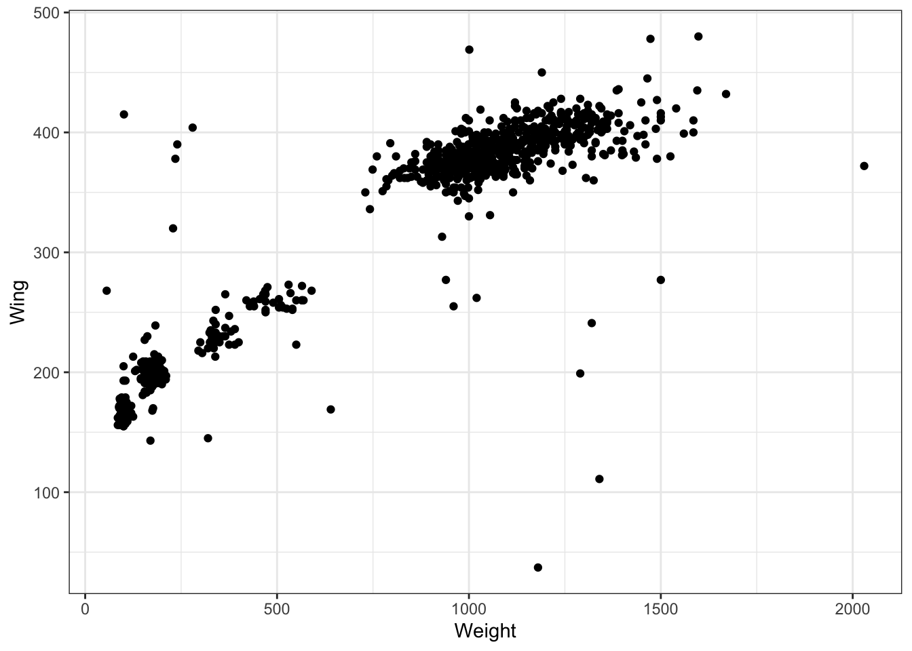
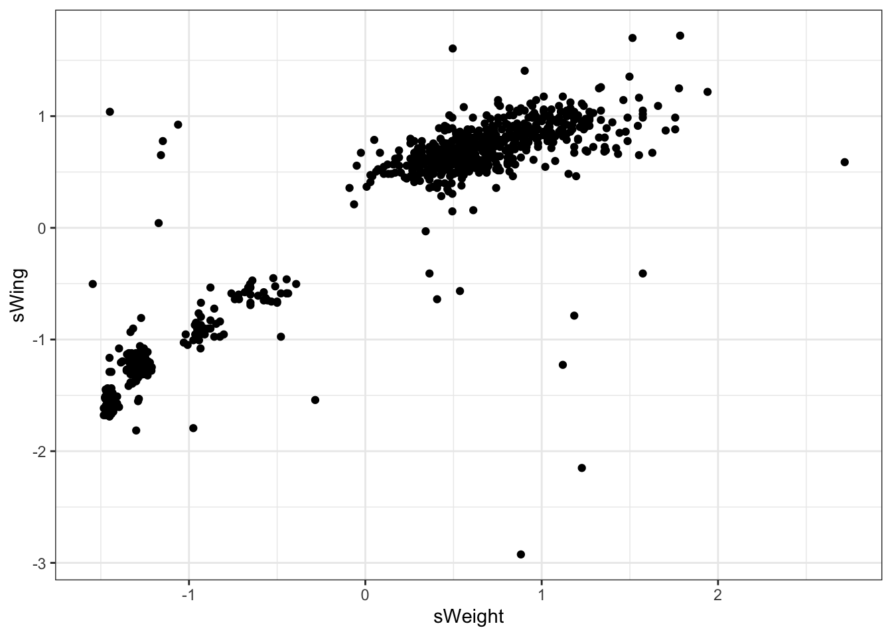
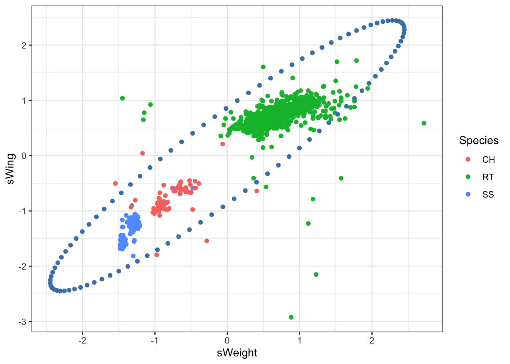

library(tidyverse)
library(tidymodels)
library(ellipse)Correlation and Covariance
STA 101
Bulletin
- Final project due date updated (see announcement)
- Course evaluations. \(>80\%\) response \(\rightarrow\) +1pt final project.
- If \(>80\%\) TA evals, another 0.5 points.
Getting started
Download this application exercise by pasting the code below into your console
download.file("https://sta101-fa22.netlify.app/static/appex/ae26.qmd",
destfile = "ae26.qmd")Load packages
Today
By the end of today, you will…
- understand correlation and covariance matrix representations
- visualize geometric intuition
Covariance and correlation
Empirical covariance between two variables
\[ Cov(X,Y) = \frac{1}{n-1} \sum_{i = 1}^{n} (x_i - \bar{x})(y_i - \bar{y}) \] Later in this application exercise we write \(\sigma_{xy}^2\) as the covariance between x and y.
Empirical correlation between two variables,
\[ p_{XY} = \frac{Cov(X,Y)}{\sigma_X \sigma_Y} \] where \(\sigma_X\) and \(\sigma_Y\) are the standard deviation of X and Y respectively.
Example
library(tidyverse)
x = c(1, 2, 3, 4, 5)
y = c(0.5, 3, 2.2, 5, 5.5)
df = data.frame(x, y)
fit1 = linear_reg() %>%
set_engine("lm") %>%
fit(y ~ x, data = df)
r2 = glance(fit1)$r.squared
cat("Correlation between x and y: ", cor(x,y),
"\nCovariance between x and y: ", cov(x,y),
"\nStandard deviation of x: ", sd(x),
"\nStandard deviation of y: ", sd(y),
"\nR squared: ", r2
)Correlation between x and y: 0.9243906
Covariance between x and y: 3
Standard deviation of x: 1.581139
Standard deviation of y: 2.052559
R squared: 0.854498Guess that correlation!
Data
Hawks is a subset of a data set by the same name in the Stat2Data package. Today we will focus on the following measurements of 891 hawks:
Species: CH = cooper’s, RT = red-tailed, SS = sharp-shinnedWeight: body weight in gramsWing: length in mm of primary wing feather from tip to wrist it attaches toCulmen: length in mm of the upper bill from the tip to where it bumps into the fleshy part of the birdHallux: length in mm of the killing talon
Hawks = read_csv("https://sta101-fa22.netlify.app/static/appex/data/Hawks.csv")glimpse(Hawks)Rows: 891
Columns: 5
$ Species <chr> "RT", "RT", "CH", "SS", "RT", "RT", "RT", "RT", "RT", "RT", "R…
$ Weight <dbl> 920, 990, 470, 170, 1090, 960, 855, 1210, 1120, 1010, 1010, 11…
$ Wing <dbl> 385, 381, 265, 205, 412, 370, 375, 412, 405, 393, 371, 390, 41…
$ Culmen <dbl> 25.7, 26.7, 18.7, 12.5, 28.5, 25.3, 27.2, 29.3, 26.0, 26.3, 25…
$ Hallux <dbl> 30.1, 31.3, 23.5, 14.3, 32.2, 30.1, 30.0, 31.3, 30.2, 30.8, 29…Examples
Two measurements
Let’s look at weight and wing length.
Hawks %>%
ggplot(aes(x = Weight, y = Wing)) +
geom_point() +
theme_bw()
# Standardize data
Hawks2 = Hawks %>%
mutate(sWeight = (Weight - mean(Weight)) / sd(Weight),
sWing = (Wing - mean(Wing)) / sd(Wing))
Hawks2 %>%
ggplot(aes(x = sWeight, y = sWing)) +
geom_point() +
theme_bw()
How can we describe the variability of the data?
# Covariance matrix
covMatrix1 = Hawks %>%
select(Weight, Wing) %>%
cov()
covMatrix1 Weight Wing
Weight 214310.57 41247.975
Wing 41247.97 9085.273covMatrix2 = Hawks2 %>%
select(sWeight, sWing) %>%
cov()
covMatrix2 sWeight sWing
sWeight 1.0000000 0.9347852
sWing 0.9347852 1.0000000Covariance matrix \(\Sigma\) collects variances and covariances together,
\[ \Sigma = \begin{pmatrix}\sigma_x^2 & \sigma_{xy}^2\\\ \sigma_{xy}^2 & \sigma_y^2\end{pmatrix} \] How can we visualize the covariance matrix above?
- offline example of matrix multiplication
The “matrix inverse” helps. The inverse of \(\Sigma\) is denoted \(\Sigma^{-1}\). The property of the inverse is:
\[ \Sigma^{-1} \Sigma = \begin{pmatrix}1 & 0\\\ 0 & 1 \end{pmatrix} \]
\[ z^T \Sigma^{-1} z = c^2 \]
where \(z = (x, y)\) and \(\Sigma^{-1} = \begin{pmatrix}s_x^2 & s_{xy}^2\\\ s_{xy}^2 & s_y^2\end{pmatrix}\). Where have we seen this before? Hint: ?pnorm or see multivariate normal
\[ \begin{pmatrix} x & y\end{pmatrix} \begin{pmatrix}s_x^2 & s_{xy}^2\\\ s_{xy}^2 & s_y^2\end{pmatrix} \begin{pmatrix} x\\\ y \end{pmatrix} = c^2 \]
\[ (x s_x^2 + y s_{xy}^2 \ \ \ \ x s_{xy}^2 + y s_y^2) \begin{pmatrix} x\\\ y \end{pmatrix} = c^2 \]
\[ x^2 s_x^2 + 2x y \cdot s_{xy}^2 + y^2 s_y^2 = c^2 \] This is the equation of an ellipse.
# Grab the points (x,y) that satisfy the equation above
ellipsePoints = data.frame(ellipse(covMatrix2))
Hawks2 %>%
ggplot(aes(x = sWeight, y = sWing, color = Species)) +
geom_point() +
theme_bw() +
geom_point(aes(x = sWeight, y = sWing), data = ellipsePoints, color = 'steelblue')
Set \(c^2 = 6\):
To make sure the function ellipse above is doing what we expect:
- First we get \(\Sigma^{-1}\):
solve(covMatrix2) sWeight sWing
sWeight 7.925401 -7.408548
sWing -7.408548 7.925401Next, we manually solve the quadratic equation using the quadratic formula:
getCoordinate = function(y, s1, s2, s12) {
A = s1
B = 2*y*s12
C = (y*s2) - 6
p1 = -1*B
p2 = sqrt(B^2 - (4*A*C))
p3 = 2*A
coord1 = (p1 + p2) / p3
coord2 = (p1 - p2) / p3
return(c(coord1, coord2))
}
getCoordinate(1, 7.925401, 7.925401, -7.408548)[1] 1.7290667 0.1405038The axes of the ellipse provide the most informative directions to measure the data. In \(n\)-dimensions, where we have a \(n\)-dimensional ellipsoid, it can be useful to look at \(p<n\) axes. The largest \(p\) axes are called the “principal components”.
- Example of “principle component analysis” in action: genes mirror geography within Europe and an associated news article discussing the work.